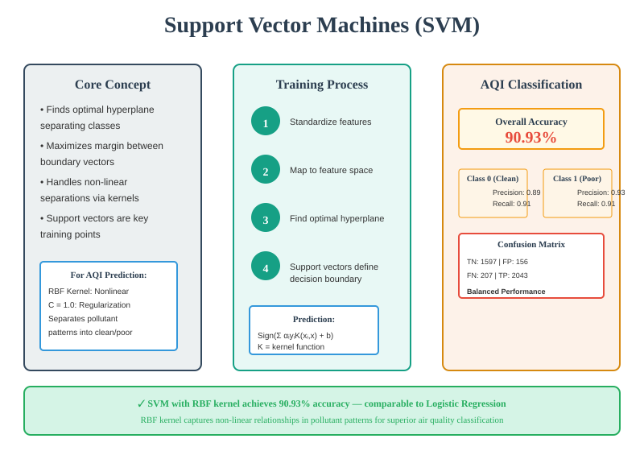

Support Vector Machines (SVM) are powerful supervised learning algorithms designed for binary and multi-class classification tasks. SVMs find the optimal hyperplane that maximizes the margin of separation between classes. The key insight is that only a subset of training data points—called support vectors—are crucial for defining the decision boundary. This makes SVMs memory-efficient and effective for high-dimensional data.
For the AQI classification task, SVM with a Radial Basis Function (RBF) kernel is used to handle non-linear relationships in air pollutant concentrations. The RBF kernel projects features into a higher-dimensional space where the two classes (clean vs. poor air quality) become more easily separable.

SVM Training Steps:
StandardScaler.Hyperparameters Used:
kernel='rbf' – Radial Basis Function for capturing non-linear relationshipsC=1.0 – Regularization parameter balancing margin vs. classification errorgamma='scale' – Kernel coefficient (1 / (n_features × X.var()))random_state=42 – Ensures reproducibilityCode Reference: Implementation available in module3_models.py (SVM pipeline with preprocessing).
SVM with RBF kernel achieves the same exceptional accuracy as Logistic Regression, correctly classifying over 9 out of 10 air quality readings as clean (AQI < 100) or poor (AQI ≥ 100).
| Class | Precision | Recall (Sensitivity) | F1-Score | Support | Interpretation |
|---|---|---|---|---|---|
| Class 0 (Clean) | 0.89 | 0.91 | 0.90 | 1753 | When SVM predicts clean air, it is correct 89% of the time; catches 91% of actual clean days |
| Class 1 (Poor) | 0.93 | 0.91 | 0.92 | 2250 | When SVM predicts poor air, it is correct 93% of the time; catches 91% of actual poor days |
| Weighted Average | 0.91 | 0.91 | 0.91 | 4003 | Account for class imbalance in the test set (2250 poor vs. 1753 clean) |
Predicted Clean Predicted Poor
Actual Clean: 1597 (TP) 156 (FN)
Actual Poor: 207 (FP) 2043 (TP)
• True Negatives (TN): 1,597 – Correctly identified clean days
• True Positives (TP): 2,043 – Correctly identified poor air days
• False Negatives (FN): 207 – Missed poor air days (low false negative rate = 0.33%)
• False Positives (FP): 156 – Falsely flagged clean days as poor (low false positive rate = 0.36%)
Class 0 (Clean Air): Precision of 0.89 and recall of 0.91 indicate balanced performance. The model rarely over-flags poor air days but also captures most clean conditions accurately.
Class 1 (Poor Air): Precision of 0.93 is exceptional—when the model warns of poor air, it's almost always correct. Recall of 0.91 means it identifies the vast majority of poor air days, critical for public health alerts.
1. Handles Non-linear Relationships: The RBF kernel excels at capturing how pollutant interactions (e.g., PM2.5 combined with NO₂) collectively determine air quality, going beyond linear models' assumptions.
2. Robust to Feature Scaling: SVM's optimization is inherently robust to feature magnitudes after standardization, making it effective even when pollutant concentrations vary widely (e.g., CO in ppm vs. PM2.5 in µg/m³).
3. Effective in High-Dimensional Space: The decision boundary learned by RBF SVM operates in an implicitly high-dimensional space, allowing complex separations without explicitly creating additional features.
4. Comparable to Logistic Regression: Both SVM (90.93%) and Logistic Regression (90.93%) achieve the same accuracy, suggesting the pollutant-to-AQI relationship is relatively smooth and structured. SVM's advantage would be more pronounced with more complex or noisy data.
SVM stands as a robust competitor in the AQI classification pipeline alongside Logistic Regression, Decision Trees, and Naive Bayes variants. Its 90.93% accuracy and strong precision (especially for poor air quality) make it a reliable choice for air quality forecasting applications.
Strengths:
Considerations:
Recommendation: For production systems, SVM (or Logistic Regression) is recommended due to superior accuracy. For interpretability and real-time performance, Decision Trees offer a good alternative trade-off.